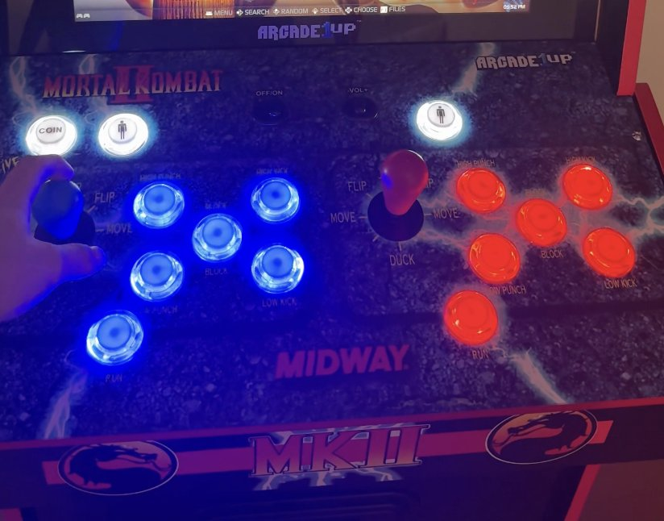

Arcade Machine Restoration & Modernization
The cabinet's stock hardware only ran the 13 games it shipped with. I gutted the original control board and display controller, wired in a Raspberry Pi loaded with over 60,000 emulated games, replaced every button and joystick, and mounted the Pi inside the cabinet since the original wiring wasn't long enough to reach it hanging loose.
Booting into the game library after the rebuild
Click below to see the steps and flip cards →

The Original Controls
The cabinet came with a standard set of arcade buttons and joysticks wired into the stock control board. They worked, but were limited to the 13-game board that came with the cabinet. This was the starting point before I began rewiring the controls.
Teardown
I removed every original button and joystick from the control panel, leaving the existing mounting holes. The stock hardware used old-style, non-illuminated buttons wired directly to the cabinet's proprietary board, so none of it was reusable with the new setup.
Installing the New Controls
I wired new LED-illuminated buttons and joysticks to a pair of USB encoder boards. This lets the Raspberry Pi read the button presses as standard USB inputs instead of using the proprietary protocol from the original board.
Wiring the Display
The original display was connected to the cabinet's stock video board, which couldn't accept input from the Raspberry Pi. I connected the Pi to the monitor's controller board over HDMI, replacing the original video signal path so the Pi could drive the screen directly.
Mounting the Raspberry Pi
The Pi was originally hanging loose inside the cabinet because the existing wiring wasn't long enough to route it somewhere else. I mounted it to the side panel and cleaned up the internal wiring and power bricks so everything had a fixed, secure position instead of dangling.
Powered On
With the new controls, display wiring, and Pi mount in place, the cabinet now boots into a retro-emulation frontend with access to over 60,000 games — a long way from the 13 games it originally shipped with.